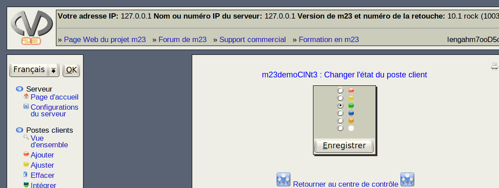

suivant:
Attention
monter:
Administrer des clients
précédent:
Notez
Table des matières
Changer l'état du poste client
Ici, vous pouvez changer l'état du poste client. Ceci peut être utile pour le débogage ou pour des autres raisons.

Sous-sections
Attention
Signification des couleurs symboliques
Travaux
Travailler plusieurs postes clients
Notez
Astuces
root 2015-04-30